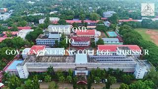
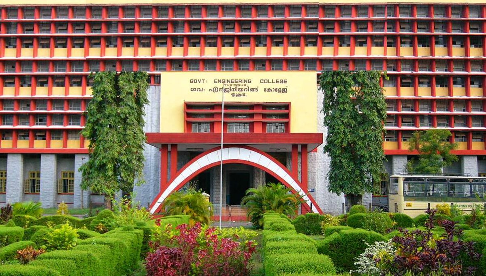
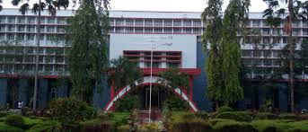

Welcome to GEC Thrissur



Government Engineering College Thrissur (GEC Thrissur), an ISO 9001: 2008 certified institution is one of the most
prestigious and reputed technical education institution in south India.
Click here to know more about GEC Thrissur
Departments
There are several Departments offered by GEC for B.Tech, M.Tech, B.Arch, M.Plan, MSC, etc.
B.Tech
- Computer Science and Engineering
- Electrical and Electronics Engineering
- Electronics and Communication Engineering
- Chemical Engineering
- Production Engineering
- Mechanical Engineering
- Computer Science and Engineering
-
Department of Computer Science and Engineering offers Undergraduate and Postgraduate programmes in Computer Science and Engineering.
Click here to know more about CSE
- Electrical and Electronics Engineering
-
Be a centre of excellence in Electrical and Electronics Engineering having strong learning and research environment,
capable of making significant contributions for sustainable development.
Click here to know more about EEE
M.Tech
- ECE
- Communication Engg.and Signal Processing
- VLSI and Embedded Systems
- EEE
- Power Electronics
- Power Systems
- Electrical Instrumentation Control
B.Arch
Besides Engineering, GEC provides architectural studies also.
Provides Ten semester B. Arch course
approved by the council of Architecture
M.Plan
Provides Four semester M. Plan course approved by the AICTE